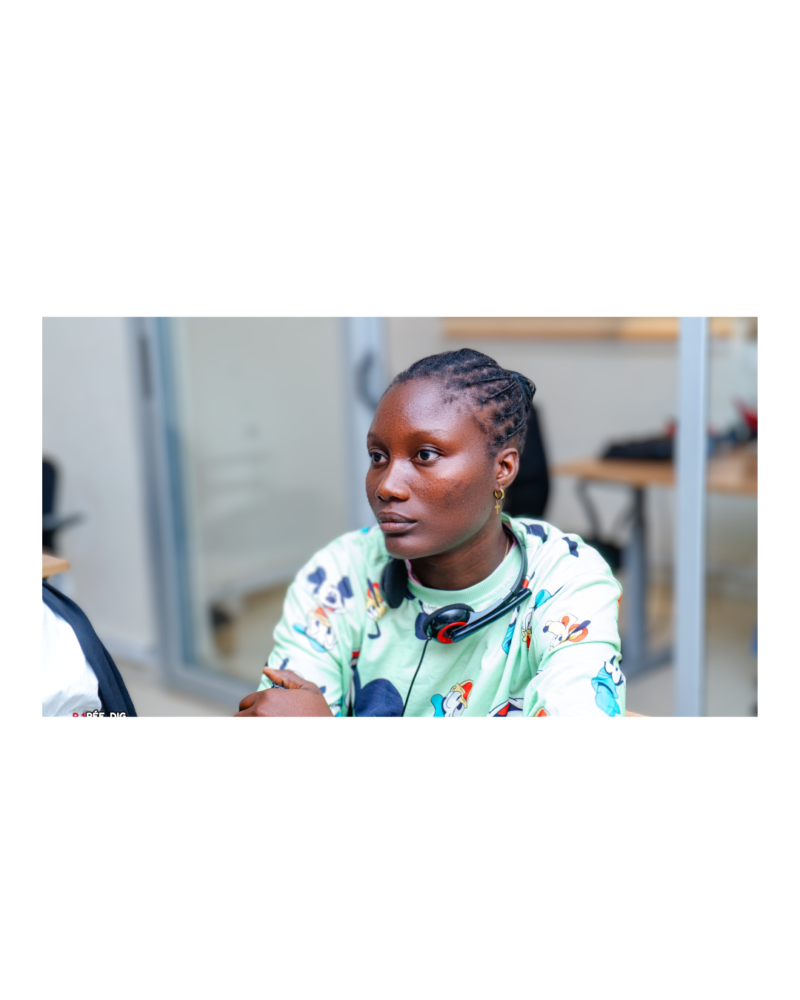

Je suis une exploratrice du savoir, passionnée par les mathématiques, le numérique et l’entrepreneuriat. Depuis toujours, j’aime comprendre, créer et innover. Pour moi, chaque chiffre, chaque ligne de code, chaque idée est une opportunité de construire quelque chose de concret.
Le numérique, les ordinateurs, les outils collaboratifs, la création de sites web… tout cela m’a fascinée autant que les maths ! Alors j’ai décidé de les combiner, et de m’y plonger avec enthousiasme.
Grâce à Simplon Sénégal et Future Au Présent (FAP), j’ai appris à manier les outils numériques, à structurer des projets, et à m’exprimer dans un monde digital en constante évolution.
Aujourd’hui, je me forme en tant que Référente Digitale chez Simplon, pour continuer à grandir entre logique et créativité, entre rigueur et passion.

Une plateforme éco-responsable pour promouvoir l’artisanat local sénégalais.
Un projet collaboratif pour améliorer la gestion des déchets à Ziguinchor.
Des vidéos animées pour sensibiliser les enfants aux valeurs et cultures africaines.